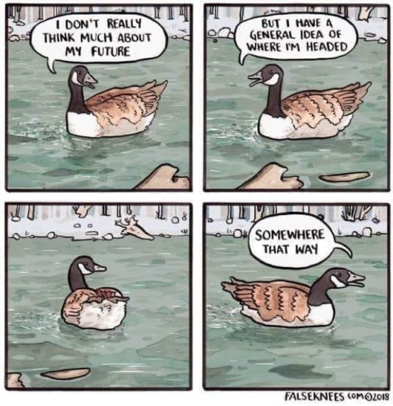

--Jed McKenna
"All time-
the past, the present, the future-
is contained now."
--J. Krishnamurti
“Living is life’s only purpose.”
–Nisargadatta
There are certain questions people ask on a regular basis. Some of those are in the “doing/planning/motivation” category.
Confusion in this area runs high.
The questions go in two directions. The most common is, “Why can’t I get up off the couch and make myself get things done?” The Tickler has written about that a few times before.
Today’s focus is on the other line of question, the, “I know I’m supposed to stay present and be good with What Is, but does that mean I have to abandon my life, my family, my job? What about goals, planning and action?” version.
Of course, I get why there’s confusion. After all, teachers have long given the idea that you’re doing this spirituality thing wrong if you’re concerned with the future and getting things done.
"There is no use planning for a future,
Which when you get to it and it becomes the present, you won’t be there.
You will be living in some other future which hasn’t yet arrived.
And so in this way,
One is never able actually to inherit and enjoy
The fruits of one’s actions.
You can’t live at all,
Unless you can live fully
Now."
--Alan Watts
“Don't say: What's next?
Let it be a surprise.
A tree doesn't wonder or plan where it should grow the next leaf or when to put out the next fruit. No, its entire life is just an unfolding. You be the tree of life that is just unfolding.
--Mooji
“I don't have a goal. Why would I cheat myself? Why would I think so small?”
--Byron Katie
As in, “Yo! You there! If you're making plans, you’re focusing on the wrong thing.”
Every spiritual seeker learns, As it is is where it’s at.
Every spiritual seeker learns you’re supposed to stay present in the moment, not be concerned with a future which is non-existent, and to accept or even love What Is without expectation, desire, or any need for change.
To have goals is to have your head in the "not now."
So it seems fair to be confused. Because those very same teachers who preach, “Stay present and in the now,” schedule their interviews and podcasts and guest speakers long in advance.
Aka, they plan.
I mean, even “Chop wood, carry water” involves action. Hopefully planning to chop wood later when it isn’t raining doesn’t knock anyone out of their attained enlightenment.
Are you stepping off the enlightenment path if you pack a suitcase for later, aim for a promotion, decide what you’ll eat later in the week when at the supermarket, or put your kid’s next-month teacher conference on the calendar?
Is making an appointment not presence?
Does As It Is not include planning and action?
Does it have to be one or the other?
And the thing is, even if you were finally able to stay totally in the Now, finally able to never plan, chopping wood only when the presence-spirit moved you, would that actually be better?
Or would that also be Wrong?
Because don’t get out of bed and don’t get things done and don’t get motivated, and well, everyone knows that’s not ok either.
So to recap-
Do and plan and have goals = wrong.
Don’t Do and don’t get things done = wrong.
Yay! Equal-opportunity wrongness.
What kind of spirituality is it if no matter which way you go, you’re living wrong?
So could it be possible that there’s not actually a right way- one right way- to live and be present and attain, spiritually?
After all, Do, or Don’t Do- both are included in As it is.
Whatever you’re moved or not moved to do, is presence.
Making plans for tomorrow, here in the present.
Having goals, here in the now.
Lying on the couch trying to force action, happening now.
Experiencing wishes and desires, now.
Holding lightly to both doing and the lack of doing.
Because after all, results and whatever happens later aren’t up to you anyway, no matter how well you plan.
Perhaps all of the options are good. Since existence includes all of it.
Which means no matter what does or doesn’t get done, you literally can’t do this life thing, or this enlightenment thing, wrong.
Because you can’t be not-present-in-the-now.
You are always present in the now.
“You are what you are doing RIGHT NOW!”
--U.G. Krishnamurti
Plan and take action. Don’t plan and take action.
All of it.
Right here.
Right Now.
As it is.
There is nothing else
possible.
